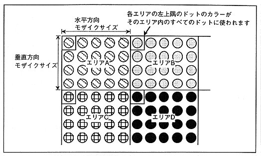
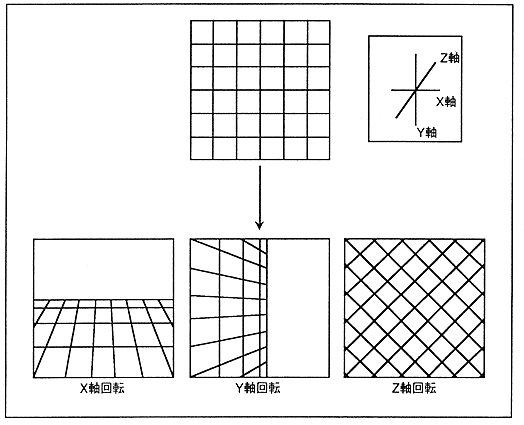

Rotating scroll plane has a rotation of coordinate axis (X, Y, Z axis) and a rotation of screen axis perpendicular to TV screen. Up to two screens can be displayed simultaneously.
Figure 3.15 Image change by rotation axis
